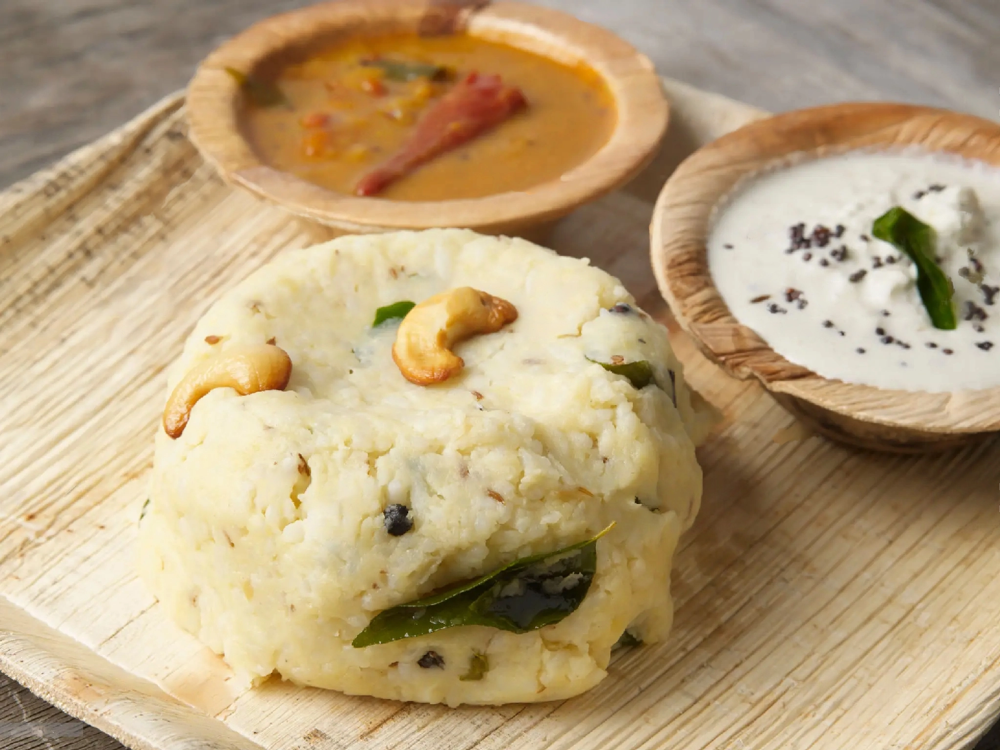

Pongal

Description
Pongal is a popular South Indian rice dish, often served for breakfast or
during festivals. It is made with rice and yellow moong dal, flavored with
ghee, black pepper, and cumin. Pongal is traditionally served with
coconut chutney and sambar.
Ingredients
- Rice
- Yellow Moong Dal
- Ghee
- Black Pepper
- Cumin Seeds
- Curry Leaves
- Ginger
- Salt
Procedure
- Wash the rice and moong dal together.
- In a pressure cooker, add the rice and moong dal with enough water.
- Add salt and cook for 3-4 whistles.
- In a pan, heat ghee and add black pepper, cumin seeds, curry leaves, and ginger.
- Pour this seasoning over the cooked rice and dal mixture. Mix well.
- Serve hot with coconut chutney and sambar.